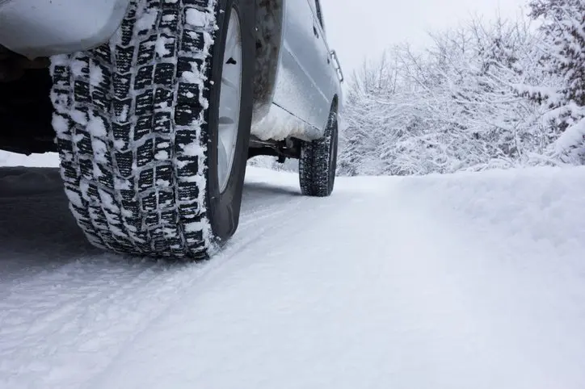

Winter tires are one of the most overlooked necessities for winter weather driving. We all know how important it is for us to dress warm for the winter weather to avoid getting sick, and our vehicles are no different. Winter tires are one of the most efficient ways to improve your vehicles's traction on the road. There are three distinct differences in winter tires: the rubber, the tread, and the edges. The cost of a set of winter tires is cheap when you consider the alternative expenses resulting from crashes and expensive mishaps. If you are looking to compare the top brands and find a great deal on a set of tires that will keep your car running safely and smoothly all winter long, come into one of the 100 conveniently located Auto Centers. We'll get you set up and even show you how to install your snow tires.
Snow tires are comprised of a soft rubber that remains flexible enough to retain traction in cold weather. All-weather tires will become overly firm and will reduce the surface area that is in contact with the road, thereby reducing your overall traction. Winter tires not only keep your car from fishtailing and sliding on ice, but they can actually increase your gas mileage. The less gas you spend sliding around on the road, the more money you will save in the long run.
The edges of your tires are something that you might rarely think about, but they serve an immensely important purpose. When you take turns, especially at higher speeds, your tires expand from the shifting weight of the vehicle and the force of the turn itself. This expansion pushes the edges of your tires into the snow, and if you are running all-weather tires, that edge will more than likely slip and lose traction. Winter weather tires have small slits and a sandpaper-like consistency to the edges that prevent fishtailing and can help correct your trajectory in a slide.
All-season tires have shallow treads that work well in warm and inclement weather to stick to rough pavement. Winter tires, on the other hand, have deep treads that channel snow, sleet, and water off the tires to create a clean and drivable surface. These treads can chew through deep snow with ease.
4.5 Rating (567)
4.2 Rating (922)
4.8 Rating (363)